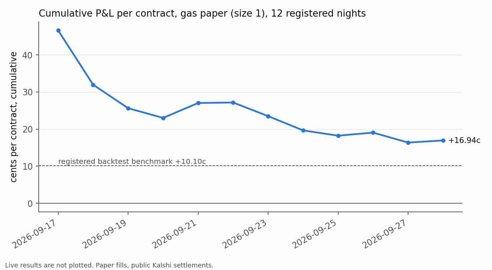

Kalshi Gas Market-Maker
Automated resting offers on Kalshi's daily gas-price markets, taken through a pre-registered backtest, a forward paper test and a small live trial.
- +16.9¢
- per contract after fees, 12-evening forward paper test (3,270 simulated fills)
- 72.1%
- of paper fills were profitable
- 38 of 85
- strategy ideas killed or failed a pre-registered gate